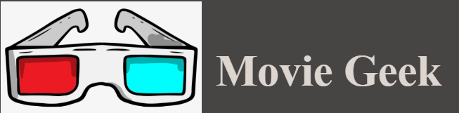
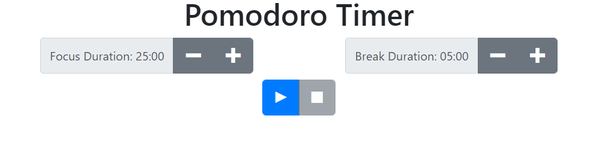

Some of my Works
Music Geek is a simple Movie application that allows users to see the most popular movies in different genres as well as the Top Movies based on the recent Box Office! This application fetchs from an API and displays the results here!

LiveChat is a full stack web application that acts as a public chatroom. In LiveChat, you can sign in with your Google Account and start sending messages with your Google profile picture attached. Technologies used are: HTML CSS, React, and Firebase.
Pomodoro Timer is a React based app that allows users to create work and break times to their liking. This allows the user to get more work done because of the work / break method the app uses! Technologies include: HTML, CSS, and React.